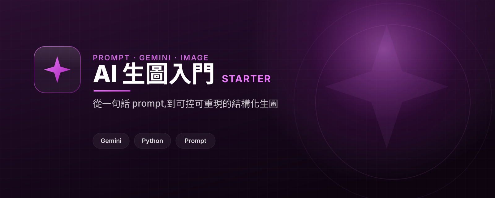

AI 生圖入門
用 AI 生圖,把每次都隨機變成可控
用 Google Gemini 學 AI 生圖入門:從一句話 prompt,到結構化、可控、可重現的 prompt 設計。
「a cat」每次生出來都不一樣 —— 姿勢、畫風、背景、光線全是模型替你決定的。要拿來做產品(貼圖、頭像、角色)時,這種隨機就是痛點。把決定權拿回來的,是 prompt 設計。

用 Google Gemini 學 AI 生圖入門:從一句話 prompt,到結構化、可控、可重現的 prompt 設計。
「a cat」每次生出來都不一樣 —— 姿勢、畫風、背景、光線全是模型替你決定的。要拿來做產品(貼圖、頭像、角色)時,這種隨機就是痛點。把決定權拿回來的,是 prompt 設計。

公開教學已經放在 GitHub 與網頁版;留下 email,我會先把這份完整 PDF 手冊寄給你，之後也會寄更新、小班工作坊通知、實戰 Q&A 與進階 prompt 範例。
也可以直接來信 yazelin@ching-tech.com
這個範本由 林亞澤(Yaze Lin) 維護 —— 出身機電自動化系統整合,現在把同一套工程方法用在 AI 產品上。任職於 擎添工業 ChingTech(1984 年成立的機電自動化公司:PLC 程式、機械手臂、AGV 無人搬運、半導體封測/PCB/面板/光學產線整合)。
技術筆記與更多範例:yazelin.github.io · GitHub @yazelin
把生圖做成真正出貨的產品這條線,我們已經做過: